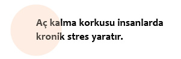

Stres

İlhan 30 yaşında genç bir adamdır. Üniversiteyi bitirdikten sonra yurtdışında mastır yapar ve mesleğini icra etmek üzere İstanbul’a yerleşir. Özel bir şirkette dolgun bir maaşla çalışmaya başlar. İşlerinin ve iş arkadaşlarıyla ilişkilerinin iyi gitmesi onun kendini güvende hissetmesini sağlar. Gerçi çok fazla çalışmaktan yorulur ama işyerinin sunduğu güven ortamı onu rahatlatır. İş durumunu “garantiye aldıktan” sonra özel hayatına yoğunlaşır.
Sevgilisiyle evlilik planları yapar ve banka kredisiyle bir daire satın alır. Ancak İlhan’ın bu “güvenceli” durumu, şirketin küresel ekonomik krizden etkilenmesiyle sona erer. Şirket içinde bazı insanların işlerine son verileceği ve kalanların da daha yoğun çalışacağı haberleri dolaşmaya başlar.
Kimin ne zaman işine son verileceğinin belli olmaması şirkette daha önce hâkim olan barışçıl ortamın bitmesine yol açar. İlhan bir taraftan işsiz kalmak, evin kredilerini ödeyememek ve evlenme hayalini gerçekleştirememek gibi kaygılar yaşarken, diğer taraftan da “insanoğlunun karanlık tarafıyla” yüzleşir. Çünkü artık iş arkadaşları arasında rekabet başlamış, herkes kendi işini garantiye alabilmek adına diğerine zarar vermeyi göze almıştır.
Bir başka canlı tarafından zarara uğrama tehlikesi hepimizi strese sokar. Ama doğal ortamlarda hangi canlının zararlı (yılan), hangisinin ise zararsız olduğunu (tavşan) büyük ölçüde biliriz. İnsanlar söz konusu olduğunda durum değişir, çünkü burada zararlı olan ile olmayanı birbirinden ayırmak epeyce güçtür. Şirket içi bir çıkar çatışması olduğunda ise “düşman” en yakın arkadaşınız da olabilir, yöneticiniz de.
Güvensiz bir ortamda çalışıyor olmak İlhan’da yoğun kaygı ve çaresizlik duygularına yol açar. Mevcut duruma yaratıcı bir müdahalede bulunamamak ve kontrol edememek İlhan’ın olumsuz duygularını zamanla daha da yoğunlaştırır.
Stres, insanların kendilerini tehdit altında hissettikleri bir ortamda ne yapacaklarını bilememelerinden kaynaklanır. Böylesi bir durumla yüz yüze kalmış insanların neden strese girip çaresizlik ve korku duyduklarını anlamak için gelin şimdi beyne biraz yakından bakalım.
Amigdala
Beynin stres merkezi amigdaladır. Hayatta kalmamız için son derece elzem olan bu bölüm işlevsel olarak duygusal yaşantımızı belirler. Dolayısıyla herhangi bir tehdit ya da tehlike altında olduğumuzda bu bölüm devreye girerek korku duymamıza ve harekete geçmemize neden olur.
Düşünün ki ormanda yürüyüş yaparken tehlikeli bir hayvanla karşılaşıyorsunuz. Amigdala milisaniyeler içinde bu hayvanın sizin için tehlikeli olduğuna karar vererek sizi vur ya da kaç tepkisine hazırlar (fight or flight reaction).
Birçok faktörü göz önünde bulundurarak yine milisaniyeler içinde ortamda kalıp savaşmaya ya da kaçmaya karar verirsiniz. Hangi tepkiyi vereceğiniz önceden belli olmadığından beyin bedeni aynı anda her iki tepkiye de hazırlamak durumundadır.
Vur ya da kaç tepkisinde beynin adrenalin hormonu salgılamasıyla bedende birçok dikkat çekici değişimler meydana gelir. Bu olağanüstü durumda bedende aşağıdaki değişimleri gözlemleriz:
✔ Kalp atışı hızlanır ve tansiyon yükselir.
✔ Kana daha fazla oksijen alınır.
✔ Sindirim yavaşlar.
✔ Cilt ve iç organlardan çekilen kan beyne ve kaslara aktarılır, çünkü vur ya da kaç tepkisinde en çok kana ihtiyacı olan beyin ve kaslardır.
✔ Gözbebekleri büyür.
✔ Karaciğer glikojeni glikoza çevirerek beynin ve kasların enerji ihtiyacını karşılar. Glikojen, glikozun karaciğerde depolanmış halidir.
Doğal tehlikelerin her an ortaya çıkabildiği bir dünyada stres sistemimiz atalarımızın hayatta kalmasını sağlayan en önemli faktörü teşkil ediyordu. Bu öneminden dolayıdır ki, artık o tür tehlikelerin olmadığı bir dünyada yaşamamıza rağmen, bu sistem beyinde hâlâ aktiftir.
Günümüz modern hayatında karşılaştığımız hayati tehlikelerin sayısı oldukça azdır. Ama sosyal ve psikolojik stresler yüzünden beynin stres sistemi devamlı vur ya da kaç tepkisi içindedir. Fiziksel bir tehlike karşısında vur ya da kaç tepkisine girdiğimizde aynı zamanda da eyleme geçeriz. Ancak strese yol açan faktörün sosyal ya da psikolojik olması durumunda harekete geçmediğimiz halde vur ya da kaç tepkisine gireriz.
Gündelik hayatta stres sistemimizi uyararak bizi vur ya da kaç tepkisine sokan birçok faktör vardır. İş hayatının beklentilerinin yüksek olması, monoton bir meslek hayatı, kişisel yeteneklerin iş hayatında kullanılamaması, iş hayatındaki kararlara müdahale edememek, maddi olanaksızlıkların hayatı sınırlaması, faturaları ödemekte zorlanmak, sevgili ya da eşlerle yaşanan ilişki sorunları, işsizlik ya da işsiz kalma korkusu gibi birçok faktör günümüz insanının yaşadığı streslerden yalnızca bazılarıdır.
Gelin şimdi bizi gündelik hayatta strese sokan faktörleri biraz daha yakından inceleyelim.
➊ Dışsal faktörler

Strese yol açan dışsal faktörlerin başında savaşlar, içsavaşlar, terör, güven sarsan siyasal ve ekonomik durumlar ve ağır hastalıklar gelir. Bunun yanı sıra birçok insan somut olarak bu tehlikelerden uzak bir yaşam sürmesine rağmen, iç dünyasında felaket senaryoları kurarak kendini tehlike altında hisseder. Bu anlamda kişinin kanser olması nasıl ciddi bir stres sebebiyse, kanser olmaktan korkması ve devamlı bir doktordan öbürüne koşturması da bir stres sebebidir. Aynı şekilde bir kişi aylık kirasını ödeyememenin verdiği stresi yaşarken, bir diğeri günün birinde elindeki milyonları kaybettiğinde neler yaşayacağını kurarak da strese girer.
Bu faktörlerin yanı sıra, çevreyolu ya da havalimanı gibi sesli yerlere yakın bir evde yaşamak, içinde hiçbir değişiklik barındırmayan monoton bir ortamda çalışmak ya da yaşamak da dışsal stres faktörleri arasındadır.
➋ Kişinin temel ihtiyaçlarını sınırlayan faktörler

Burada söz konusu olan kişisel hayatımızda meydana gelen ve yaşantımızı derinden etkileyen değişimlerdir. Uzun süren bir ilişkinin bitmesi, anne ve babayı kaybetmek, fakirleşmek, hastalık ya da işsizlik nedeniyle sosyal statü kaybı ve dar bir alanda birçok insanla birlikte yaşama zorunluluğu gibi birçok faktör bu kategoriye dahildir.
➌ Performansa bağlı faktörler

İnsanlara verilen değerin performansa endekslendiği günümüz dünyasında yüksek pozisyondaki yöneticiden seri üretim bandı başındaki işçiye kadar neredeyse herkes bu stresi yaşamaktadır. Burada söz konusu olan kapitalist sistemin bütün bireylerden bir taraftan yüksek performans beklerken, diğer taraftan da onlara kontrol imkânı sunmamasıdır. Nasıl bir yönetici kendi kişisel kontrolü dışında bazen haftada onlarca kez uçağa binmek zorundaysa, bandın başındaki işçi de kendi kişisel kontrolünün dışında günde belirli bir sayıda ürün üretmek mecburiyetindedir. Bunun yanı sıra şirket içi alınan kararların şeffaf ve iletişimin açık olmaması, kariyeri kaybetme korkusu ve mobbing gibi faktörler de bu kategoriye girer.
➍ Sosyal faktörler

Strese yol açan sosyal faktörlerden birincil sırada etkilenen toplumun genç nüfusudur. Bir taraftan ebeveynler ve öğretmenlerle yaşanan kuşak sorunları, diğer taraftan arkadaş grubundaki iktidar sorunları gençlerde ciddi strese yol açmaktadır. Şişman insanlara yönelik ırkçılığın geldiği noktada kilolu olan gençlerin durumu içler acısıdır. Normalde bir azınlığa mensupsanız sosyal stres yaşamanıza rağmen aileniz sizin için kurtarıcı bir rol üstlenir, çünkü onlar da sizinle aynı kaderi paylaşır. Ama söz konusu şişmanlık olduğunda ailenin koruyuculuğu da kalmaz. Hatta şişman olan ebeveynler bile şişman çocuklarına baskı uygular.
Bunların dışında aile içinde yaşanan birçok farklı sorun da sosyal stres faktörleri kategorisine girer. Kişinin seçtiği partnerin aile tarafından kabul görmemesi, ebeveynlerden birinin evlenmesi, aile fertlerinden birinin ciddi bir fiziksel ya da psikolojik rahatsızlığa yakalanması gibi durumlar sosyal stres faktörleridir.
➎ İçsel çelişkiler ve belirsizlikler faktörü

Günümüzde başta genç nüfus olmak üzere birçok insan geleceğiyle ilgili yoğun endişelerle yaşamak zorundadır. Batı’da sosyal devletin yavaş yavaş iflası, Doğu’da aile ve grup içindeki sosyal desteğin çöküşüyle günümüz modern bireyi hiçbir zaman olmadığı kadar yalnızlaşmıştır. Yapılan araştırmalar insanların hiçbir zaman bu denli mutsuz olmadıklarını vurgulamaktadır. Daha önce devletin ya da sosyal ağın taşıdığı bütün yükü bugün günümüz bireyi kendisi taşımak zorundadır.
Bu yalnızlığın en belirgin göstergelerinden biri de hiçbir zaman olmadığı kadar büyük bir bolluk içinde yaşadığımız günümüzde birçok insanın aç kalma korkusu yaşamasıdır. Dikkat çekici noktaysa, bilimde food-insecurit adı altında geçen bu durumun Afrika’da değil, bolluğun ana merkezi olan Amerika’da yaşanmasıdır. Bu korkunun ne ölçüde yaşandığını görebilmemiz için insanların resmi tatil günleri öncesinde süpermarketlerdeki alışverişlerine bakmamız yeterlidir. Bu insanlar süpermarketlerin bir ya da birkaç gün kapalı kalmasının yarattığı açlık korkusuyla alışveriş arabalarını tıka basa doldurmakta ve ancak böylelikle aç kalma korkularını bastırabilmektedirler.
Achim Peters, aç kalma korkusunun bu insanlarda yarattığı kronik stresten dolayı, stres sisteminin devre dışı kaldığını ve insanların şişmanlamasında bu faktörün ciddi bir rol oynadığını vurguluyor.
Kronik stresin oluşumu
Bahsettiğim faktörler hepimizde stres tepkilerine yol açar. Mesela bulunduğumuz semtte bir bombanın patlaması, işimizi kaybetmek, işyerinde entrikalara maruz kalmak, herhangi bir özelliğimizden dolayı ayrımcılığa uğramak ya da kendimizi güvende hissetmemek gibi durumların bizi strese sokması gayet doğaldır. Ama bu faktörlerin kronik strese yol açıp açmayacağı birçok başka faktöre de bağlıdır. Mesela semtte bomba patlaması, Ahmet’te kronik strese yol açarken, Mehmet’te yalnızca bombanın patladığı anda yaşadığı panikle sınırlı kalır. Mehmet inancı gereği insanın dünyaya gelme ve gitme zamanının belirlenmiş olduğuna, kendisinin bu dünyada bir yolculukta ve hatta bir “gurbet”te olduğuna inanır. Gitme zamanını ise bir felaket olarak değil, sevgiliyle kavuşma, yani “vuslat” olarak görür. Dolayısıyla da patlayan bomba onda kronik strese yol açmaz. Ahmet ise dünyaya başka bir perspektiften bakar. O sosyalizasyonu gereği, olan biten her şeyin tesadüflere ve doğru-yanlış kararlara yönelik işlediğine inanır. Bu olayın onda kronik strese yol açmasının nedeni ateistliği ya da inançsızlığı değildir. Onda kronik strese yol açan temel nokta, bu tarz bir düşünce içinde olmasına rağmen o semtte ya da o şehirde oturmaya devam etmesidir.

Gördüğümüz gibi bir durumun kronik strese yol açıp açmamasını belirleyen faktörler oldukça karmaşıktır. Bazen uyarıcının kronik olması (her hafta bir bombanın patlaması), bazen kişinin inanç sistemi, bazen de her ikisinin karşılıklı etkileşimi kronik stres oluşumuna yol açar. Ama bu karmaşıklığa rağmen yine de konuya netlik getirebilmek adına aşağıdaki sınıflandırmadan yararlanabiliriz.
➊ Olumlu stres

Bu durumda kişi, karşılaştığı zorluğu bir sorun olmaktan çok, halledilmesi gereken bir konu gibi algılayarak çözüm yolunda harekete geçer.
Dilek ve kız kardeşi Semra arasında çıkan bir gerginlik onların birbirlerine bağırmaları ve Semra’nın ağlayarak Dilek’in evini terk etmesiyle sonuçlanır. Bu durumda Dilek eğer bu sorunu yapıcı bir şekilde çözmezse, bu onu günlerce ve belki de aylarca meşgul edip kronik bir stres haline gelebilecektir. Oysa kavgadan kısa bir süre sonra kardeşini arayıp, kendisinin de üzgün olduğunu bildirmesi ve onunla tekrar bir araya gelip yapıcı bir şekilde var olan sorunu çözmeye çalışması, kendi ihtiyaçlarını göz ardı etmeden ama aynı zamanda da zorunlu uzlaşmalara hazır olması bu stresli durumu onun adına olumluya çevirecektir. Zira Dilek bu stresli durumu olumluya çevirerek hem kendisinin hem de kardeşinin kazançlı çıkacakları bir çözüm bulmuştur. Bu yaklaşımla hem sorunu çözmüş hem de özgüvenini sağlamlaştırmıştır. Benzer bir sorunu yaşayıp yapıcı bir şekilde çözememiş birçok iyi arkadaş, kardeş ya da akraba için durum kronik strese dönüşür.
➋ Tolere edilebilen stres

Burada birey kendisini normalde fazla strese sokabilecek bir durumla karşı karşıya kalır. Ancak stres karşısında geliştirdiği başa çıkma stratejileri sayesinde durumu tolere edilebilir kılar. Burada önemli olan bireyin sağlam bir sosyal ilişkiler ağına sahip olması ve yaşadığı olayı sağlıklı bir perspektiften değerlendirmesidir.
Şenol dünya çapında tanınan bir yoga hocasıdır. Dünyanın değişik yerlerinde hocalık yaptıktan sonra birkaç yıllığına Berlin’e gider. Berlin’deki yaşamından son derece memnun olan Şenol bir yaz akşamı motosikletiyle gezinti yaparken bir otobüse çarpar ve ağır yaralanır. Kaldırıldığı hastanede doktorlar sağ bacağının kesilmesi konusunu bile tartışırlar. Yakınlarının itirazı üzerine Şenol saatlerce süren bir ameliyat geçirir. Ameliyatın ardından bir ay hastanede kaldıktan sonra taburcu edilir. Yaşadığı travmanın yarattığı üzüntüyü atlatarak travma konusunda uzman bir psikologla çalışmaya başlayan Şenol, kısa süre sonra bacağında büyük bir platin olması ve koltuk değnekleriyle yürümesine rağmen yoga derslerine başlar. Zira o yaşadığını kabullenmiştir. Hayatta bu tür deneyimlerin her an herkesin başına gelebileceği gerçeğiyle yüzleşip içsel büyüme ve olgunlaşma yolunda önemli bir adım atmıştır.
Şenol’un yaşadığı son derece stresli olan bu olaya karşı geliştirdiği başa çıkma stratejileri bize aynı zamanda bir olayı felaket haline getiren şeyin kendimizle ilişkili olduğunu göstermesi açısından da önemlidir. Başka bir insan kendisini aynı durumda “kaderin sillesini yemiş” gibi hissedebilir, kurban psikolojisinde yıllarını geçirebilir, kazadan ötürü ya kendini ya da otobüs şoförünü ya da hayatı suçlayabilir ve yaşadığı bu ağır olaydan kronik bir stres yaratabilirdi.
➌ Toksik (zehirli) stres
Yaşanan stresin yoğun olması ve uzun sürmesi söz konusu stresi zehirli hale getirir. Kişinin bu durumla başa çıkabilmek adına harekete geçirdiği stratejiler durumun vahameti karşısında yetersiz kalır.
Örnek olarak tekrar Şenol’u alırsak; eğer Şenol’un bacağı kesilseydi, o bu durum yüzünden işini yapamaz hale gelseydi, yaşadığı fiziksel travmadan sonra bir de maddi sıkıntılarla boğuşmak zorunda kalsaydı muhtemelen geliştirdiği başa çıkma stratejileri yetersiz kalırdı. Yani içinde bulunduğu stresli durumdan çıkamaz ve hatta her geçen gün o durumun daha da içine girebilirdi.
Günümüz modern dünyasında birçok insan ya yaşadığı olaylardan ya da kaygılı bir ruh halinden kronik zehirli stres altında yaşamaktadır. Bedenin devamlı “vur ya da kaç tepkisi” içinde olması ve bundan dolayı da devamlı adrenalin ve kortizol üretmesi modern hayatın neredeyse bütün rahatsızlıklarına yol açan temel faktörlerdir. Enerji kaybı, her türlü fiziksel ağrı, konsantrasyon sorunları, kulak çınlamaları, uyku bozuklukları, depresyon, psikosomatik hastalıklar ve içsel huzursuzluklar gibi birçok rahatsızlığın altında yatan temel faktör kişinin yaşadığı strestir. Uzun bir süre kronik strese maruz kalanların stres sistemleri doğaları gereği, ya duruma ayak uydurarak devre dışı kalır (B grubu) ya da stresli duruma ayak uydurmayarak devamlı aktif kalır (A grubu).
Toksik strese maruz kalmış her birey günün birinde bir tercih yapmak zorundadır. Bu durumda kişi mutsuz olduğu eşinden ayrılmak, işinden istifa etmek ya da memnun olmadığı semtten, şehirden ya da ülkeden taşınmak gibi bir karar verip, dışsal faktörü hayatından çıkarabilir. Ama dışarıdan bakıldığında son derece basit gibi görünse de bu tür hayati adımları atmak oldukça zordur. Hayatın bu denli merkezi alanlarında derin değişimler yapmak korkulara ve içsel defanslara yol açar. Bundan dolayıdır ki birçok insan mutsuz olduğu halde evliliğini bitiremez, işini ya da sosyal çevresini değiştiremez.
Müdahale etmediğimizde bu tür dış faktörlerde herhangi bir değişim olmaz ve zaman geçtikçe bu durum bizi daha fazla rahatsız etmeye başlar. Dışsal faktörlerde herhangi bir değişime gitmeden stresli olmasına rağmen durumda kalmayı tercih edenlerin birçoğu alkol, sigara, yemek, alışveriş, kumar ya da iş bağımlılığı gibi stratejilerle durumu idare etmeye çalışır. Ama bu tür başa çıkma stratejileri yalnızca kısa vadeli bir rahatlama sağlarken, uzun vadede hem bireye hem de topluma zarar verir.
Beynin stres sistemi biz ancak var olan sorunu çözdüğümüzde rahatlar. Çözemediğimiz sürece “vur ya da kaç tepkisi” içinde kalarak bizi strese sokar. Ama beynin stres sistemini rahata kavuşturmak için ille de dış faktörleri değiştirmemiz gerekmez. Kaldı ki dış faktörleri değiştirdiğimizde bir sonraki adımda benzer bir durumla karşılaşma olasılığımız da yüksektir. Yine problemli bir sevgili ya da eş, yine sorunlu iş arkadaşları ve yine alışılması güç sosyal ilişkiler içerisine düşme riskimiz yüksektir. Kavafis’in “Aynı mahallede kocayacaksın, aynı evlerde kır düşecek saçlarına, dönüp dolaşıp bu şehre geleceksin sonunda, başka bir şey umma” dizeleri tam da bu gerçekliğe işaret etmektedir. Tabii ki bu herkesin bir “derviş sabrıyla” olanı biteni kabullenmesi anlamına gelmez. Çünkü derviş mertebesine ulaşmak herkesin yapabileceği bir şey değildir. Ama önemli olan stresli bir ortamda kişinin kendi payına düşeni görüp halletmesi ve sonrasında harekete geçmesidir. Somutlaştırırsak; mahallesinde patlayan bomba yüzünden strese girip başka bir yere taşınan kişi muhtemelen o taşındığı yerde de benzer bir sorunla karşılaşacaktır. Ama taşınmadan önce “ölüm korkusunu” yenerse ve hayatta birçok şeyin bizim elimizde olmadığı gerçeğini kabul ederse, yani bu streste kendi payına düşen noktayı hallettiğinde, başka bir mahalleye taşınmak onun için oldukça hayırlı olacaktır.
Kronik strese verilen tepkiler
Stres alanında yapılan araştırmalar günümüzde insanları kronik strese sokan uyarıcıların tahminimizin çok daha üstünde olduğunu ve kanser de dahil olmak üzere neredeyse bütün hastalıkların kaynağında kronik stresin yattığını gösteriyor. Bu araştırmalara göre günümüz insanı iş hayatı, özel hayat ve risk faktörleri olmak üzere hayatın üç alanında ciddi stres uyarıcılarıyla yaşamak zorunda kalıyor. Bu alanlara daha yakından baktığımızda aşağıdaki stres uyarıcılarıyla karşılaşıyoruz:
İş hayatı: Küreselleşmek, şirketlerin birleşimi, işini kaybetme tehlikesi, kişinin işyerinde yalnızca bir çalışana indirgenmesi, iş hayatındaki kararlara müdahale edememek, beklentilerin yüksek olması, iş saatlerinin uzaması, randevu ve performans baskısı, bilgi terörü (e-mail vs.), dar alanda çalışmak, çok fazla iş seyahati yapmak, telefon ve video konferansları, gözle görülür sonuç vermeyen toplantılar, rekabet baskısı, gece işi ya da vardiyalı iş, kişinin yapabileceğinin çok üstünde işinin olması, kişinin yapabileceğinin çok altında işinin olması, gelecek korkusu ve telaşlı iş süreçleri.
Özel hayat: Maddi sıkıntılar, ilişki sorunları, dinlenme ve yalnız kalma imkânlarının olmaması, cinsel sorunlar, ev içi kavgalar, aşk ya da evlilik ilişkisindeki rollerin net olmaması, yaşlı ya da hasta yakınların bakımı, yalnızlık, fiziksel ya da psikolojik rahatsızlıklar, bir yakının kaybı, ayrılmak, boşanmak ve çocuklarla ilgili sorunlar.
Risk faktörleri: Gürültü, monoton bir hayat, hareketsizlik, sağlıksız beslenme, yeterince uyuyamama, sigara kullanımı, yüksek miktarda alkol tüketimi, fazla miktarda ilaç almak ve uyuşturucu ya da uyarıcı kullanımı.
Strese yol açan bu faktörlere baktığımızda günümüz modern dünyasında, özellikle de büyük şehirlerde, hemen hemen herkesin yoğun bir şekilde kronik strese maruz kaldığını söyleyebiliriz. Nitekim günümüz insanı bundan dolayı şişmanlık ve obezite dışında stres kaynaklı başka birçok rahatsızlık da yaşamaktadır.
İnsanlar kronik strese girdiklerinde gerilim sınırlarında bir düşüş meydana gelir. Bu, kişinin strese dayanıklılığının azaldığını ve strese karşı daha fazla hassaslaştığını gösterir. Gerginlik, dikkatsizlik, hiperaktivite, sürekli tetikte olma hali, bir türlü sakinleşememe duygusu kişinin kronik strese girdiğinin göstergeleridir. Bunun yanı sıra kişi konsantrasyon sorunları, hafıza ve dikkat bozuklukları yaşar. Önemli randevular unutulur, kişi kendi işinde daha önce yapmadığı hatalar yapmaya başlar, önemli ile önemsizi birbirinden ayıramaz, düşünceleri devamlı karışıktır, yaratıcılık ve esneklik özellikleri yok olur.
Kronik stres altında kişi aynı zamanda duygusal ve sosyal alanda da sıkıntılar yaşamaya başlar. Bunun başlıca nedeni kişinin hem kendisine hem de sosyal çevresine karşı sabırsızlığı ve agresif tavırlarıdır.
Aşırı durumlarda kronik stres kişiyi günümüzün en yaygın sendromu olan burnout’a sürükler. Bu da kişinin artık yanıp bittiği anlamına gelir. Genellikle birçok insan burnout’un üst düzey çalışanlarda ya da yöneticilerde görüldüğünü düşünse de, bu doğru değildir.
Burnout birden fazla çocuğa bakmak zorunda olan bir ev kadınında ortaya çıkabildiği gibi, yoğun sınav stresi yaşayan bir öğrencide de görülebilir. Kronik stres yaşayanlar aşağıdaki belirtileri gösterir:
✔ Bilişsel boyut: Konsantrasyon bozukluğu, gün ortasında hayallere dalmak, hafıza sorunları, performans sorunları, sabit fikirlilik, gerçeklerle yüzleşmemek, algı sorunları, kâbuslar ve dikkat bozuklukları.
✔ Duygusal boyut: Agresyona meyilli olmak, korku, güvensizlik, memnuniyetsizlik, dengesizlik, duygusal iniş ve çıkışlar, gerginlik, asabiyet, depresyon, hissizlik, keyifsizlik, içsel boşluk ve bitkinlik.
✔ Vejetatif (otonom) boyut: Kalp-damar hastalıkları, tansiyon, bulaşıcı hastalık riskininin artması, gastrit, mide ve bağırsak ülseri, sindirim sorunları, kronik yorgunluk, uyku bozuklukları, hormonal dengesizlikler, kolesterol yüksekliği, tiroit rahatsızlıkları, regl düzensizlikleri, sperm üretiminin düşmesi, cinsel bozukluklar, cilt rahatsızlıkları, aşırı terlemek, baş dönmesi, nefes sorunları ve migren.
✔ Kas boyutu: Genel kas gerginliği, çabuk yorulmak, kramp eğilimi, kas titremesi, tikler, gevşeyememe, lokal kas gerilimleri, sırt ve baş ağrıları.
✔ Davranışsal boyut: Yapılacak işleri ertelemek, yapılacak işleri karıştırmak, işleri bir türlü bitirememek, sürekli hata yapmak ve sorun yaratacak davranışlar sergilemek.
Görüldüğü üzere kronik stres tahmin ettiğimizin çok daha üstünde rahatsızlıklara yol açmaktadır. Kuşkusuz bu liste daha birçok fiziksel ve psikolojik rahatsızlıklar eklenerek uzatılabilir. Ama konunun ciddiyetini anlamak açısından yukarıdaki listenin yeterli olacağını düşünüyorum.
Daha önceki bölümlerde de belirttiğim gibi kronik stresten kaynaklı rahatsızlıklar A grubundakilerde daha sık görülür, çünkü onların stres sistemi duruma adapte olmaz ve her defasında aynı tepkiyi vererek, kişiyi devamlı “vur ya da kaç tepkisinde” tutar. Bu durumda kişi trafiğe her çıktığında diğer şoförlere sinirlenir, her korna sesine kızar ve sürekli bir gerginlik halindedir.
Kişi istemediği şartlar altında yaşıyor ve her an “vur ya da kaç tepkisi” içinde olmasına rağmen, ne vurabilir ne de kaçabilir. Ama kanında her an yüksek miktarda adrenalin ve kortizol hormonları mevcuttur.
B grubu insanlarındaysa beynin stres sistemi bir müddet sonra “duruma ayak uydurur” ve devre dışı kalarak organizmayı koruma altına alır.
Stres sistemi devre dışı kalmış olan B grubundakiler de, A grubunda yer alanların yaşadığı gerginlik ve rahatsızlıkları yaşar. Ancak beyin stres sistemi devre dışı kaldığı için ya çok az miktarda adrenalin salgılar ya da hiç salgılamaz. Dolayısıyla da bu insanlar hormonal bir kısırdöngüye girmezler ve A grubu insanlarına kıyasla çok daha az gerginlik yaşarlar. Ancak bu avantajın bedelini şişmanlayarak öderler.